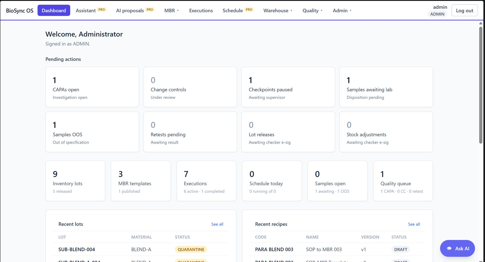
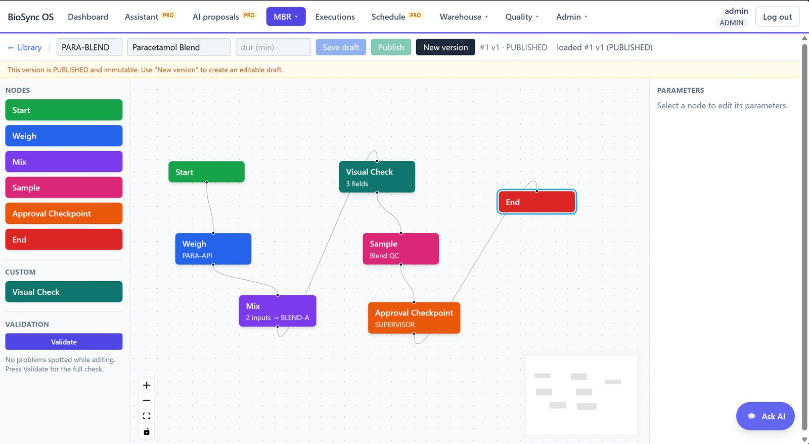
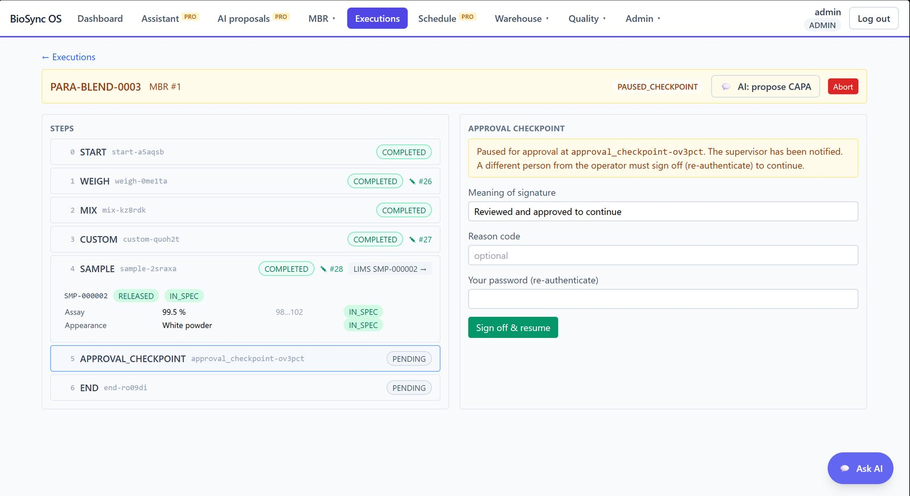
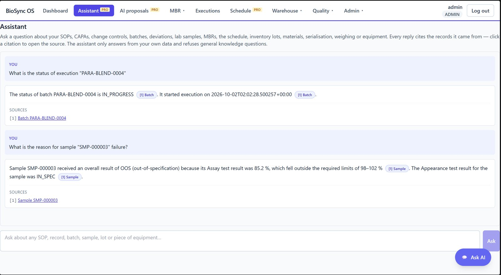
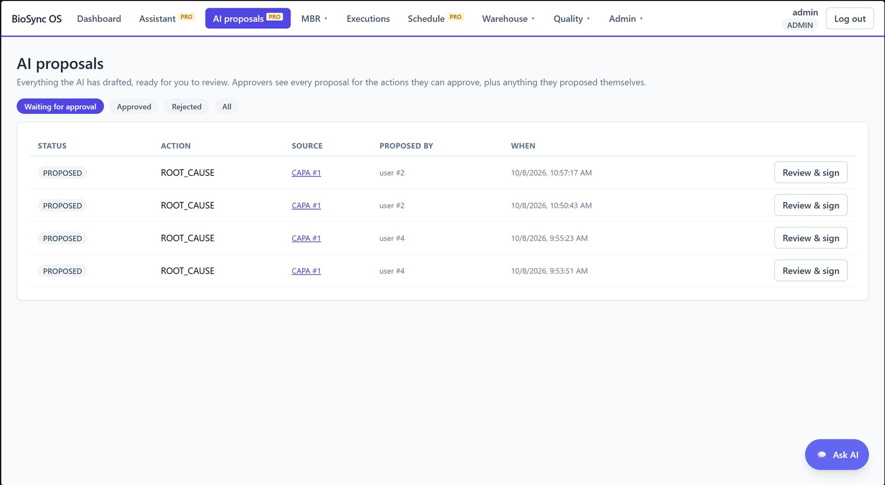
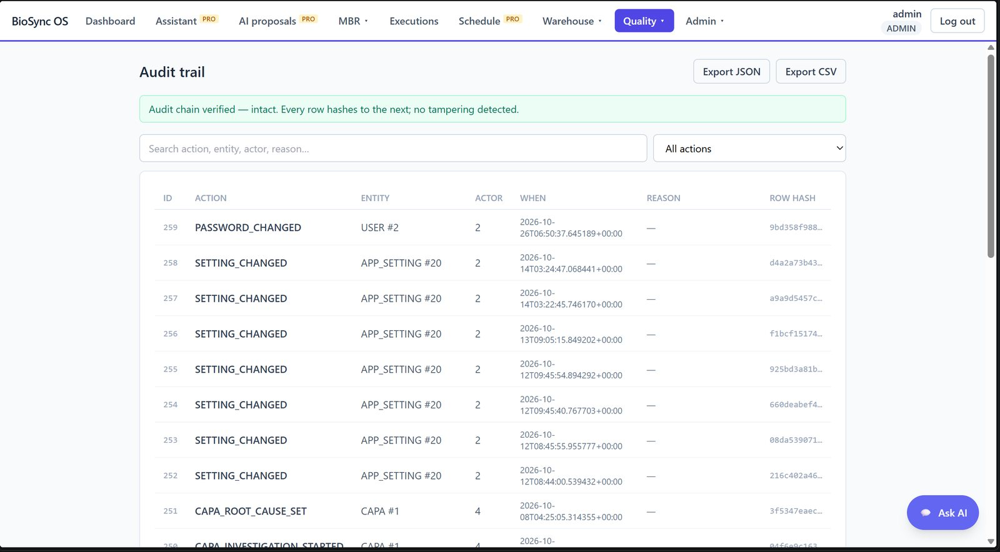

STEP 01
SOPfirst, code second
Start from your process
We read your SOPs and walk your actual workflow before designing a screen, so the software matches how your floor and QA team really work.
- SOP review
- Workflow mapping
- Compliance scope
Industry-grade AI software products for pharma manufacturing and supply chain.
A GxP manufacturing execution system for pharma. Batch records, shop-floor execution, quality and warehouse in one validated platform, with an AI layer that drafts the paperwork so your people can focus on the product.
Keep scrolling
Open CAPAs, paused checkpoints, OOS samples and lot releases awaiting e-signature, each one click from action.
Drag weighing, mixing, sampling and approval steps onto a canvas. Published versions are immutable, so every change becomes a new version.
Operators work step by step with lab results in line. Checkpoints pause the batch until a second person re-authenticates and signs.
Ask in plain language about SOPs, batches, samples or lots. Every answer links to the records it came from, and it only answers from your own data.
Root causes, CAPAs and other actions drafted by the AI wait in one queue for an approver to review and sign. Nothing applies on its own.
Every change is hashed to the one before it. BioSync verifies the chain on every view, and exports to JSON or CSV for inspectors.






The Digital Brain drafts batch records, answers questions and suggests actions. Nothing executes without a qualified person's 21 CFR Part 11 e-signature, and every change lands in a hash-chained audit trail.
Manufacturing, quality, warehouse and supply chain modules that share one data model and one audit trail.
Upload an SOP and get a draft MBR with steps, checkpoints and tolerances, ready for review.
SOP → MBRHash-chained history and ALCOA+ data integrity. Any edit to the past breaks the chain and shows.
ALCOA+CAPA, change control, SOP control, LIMS, calibration, and training gates that block untrained operators.
QMS · LIMSTolerance checks on every weighing, hold-time tracking and full batch genealogy.
SHOP FLOORUnit-level GS1 serialization, lot release and a warehouse that knows what's quarantined, released or on hold.
GS1 SGTIN · WMSPlan campaigns on a Gantt view and see retests, holds and releases in the same timeline.
PLANNINGUpload a CT, MRI, DICOM, pathology or endoscopy image, or a discharge summary or lab report. The system works out what it's looking at, runs the right model and returns structured findings.
Detects the imaging modality and flags non-medical files before any analysis runs.
MONAI models trace tumours, organs and ventricles, and classify endoscopic images.
Pulls findings and consultation advice out of discharge summaries, lab reports and prescriptions.
Images and reports from the same case become a single consolidated summary, with every inference traced.
Regulated software has to be right the first time. Every Valiantwaves product goes through the same five steps before it reaches a client.
We read your SOPs and walk your actual workflow before designing a screen, so the software matches how your floor and QA team really work.
Foundations first, then verification, then the quality suite, then AI. Each tier is delivered, tested and signed off before the next starts.
Every build passes six automated gates and the full test suite, then a manual test playbook, before it's packaged for release.
A single-tenant install on your own infrastructure, licensed per seat. Your batch data never shares a database with anyone else.
Our AI drafts, searches and proposes. Anything that changes a record waits for a qualified person and an e-signature.
Share a few details and our team will get back to you to set up the demo.
Our team will reach out on the email or phone number you shared.